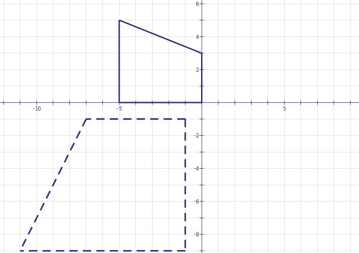
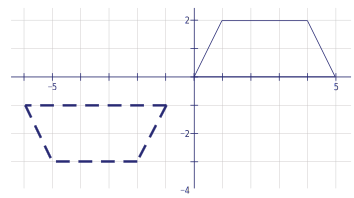
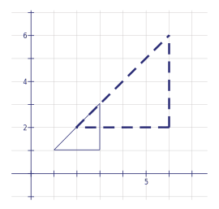
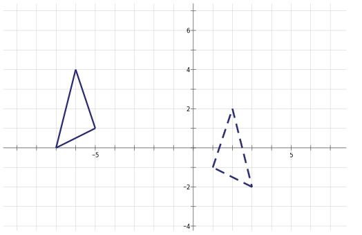
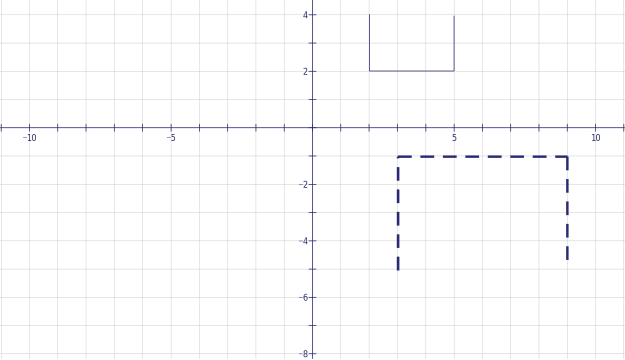
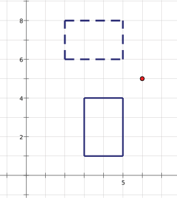

{% raw %}

<article>

  <section class="development">

    <p><q>O Bottom! Thou art translated!</q>
    <cite>–A Midsummer Night’s Dream</cite></p>

    <h2>Development</h2>

    <p>Here is a picture of a ghost, whom you might recognize from
    the video game “Mac-Pan.” The ghost goes through the points
    $\left( {1,0} \right)$, $\left( {3,2} \right)$, and $\left(
    {4, - 1} \right)$.</p>

    <figure class="fig-50">
      
    </figure>

    <div class="problem">
      <p>Those annoying ghosts will never stay put. This one moves
      three units to the right. What will be the new coordinates of
      the points on the ghost that are labeled in the picture?</p>
    </div>

    <p>Someone programming a computer game would have a hard time
    giving instructions like this: “If the ghost is at
    points$\left( {1,0} \right)$, $\left( {3,2} \right)$, and
    $\left( {4, - 1} \right)$ and needs to move three units to the
    right, the new coordinates will be…” If they programmed it that
    way, then if the ghost started in a different position they
    would have to change the instructions. Instead, the
    instructions would be more like “If a part of a ghost is at the
    point $\left( {x,y} \right)$ and the ghost moves three units to
    the right, that part will land on the point…”</p>

    <div class="problem">
      <p>You fill in the rest of the previous sentence. Make sure
      it works by trying it out on the points $\left( {1,0}
      \right)$, $\left( {3,2} \right)$, and $\left( {4, - 1}
      \right)$ and plotting them on a graph.</p>
    </div>

    <div class="problem">
      <p>Now think like a game designer and examine the more
      general problem. Ghosts can move up and down as well as right
      and left. Say the ghost’s right eye is at the point $\left(
      {x,y} \right)$.</p>

      <p class="problem-part">What will be the new coordinates of
      the eye if the ghost moves 5 units to the left?</p>

      <p class="problem-part">What if the ghost moves 4 up?</p>

      <p class="problem-part">What if 2 down?</p>

      <p class="problem-part">What if 3 to the right AND 4
      up?</p>

      <p class="problem-part">How about 1 to the left AND 6
      down?</p>
    </div>

    <p>These movements that the ghost makes are called
    <em class="vocab">translations</em>. A translation of a shape changes its position,
    but doesn’t change anything else about the shape, like the size
    or the angles. A translation also doesn’t change which way the
    shape is pointing.</p>

    <p>Sometimes a game designer would like to change the way an
    object is pointing, though. For instance, in the figure below
    Mr. Mac-Pan is moving to the right, but if he changed direction
    so that he was moving upwards it might look more realistic if
    his mouth pointed up instead of to the right. This kind of
    change in an object is called a <em class="vocab">rotation</em>.</p>
    
    <figure class="fig-50">
      
    </figure>

    <p>It’s natural to ask where a point $\left( {x,y} \right)$ would wind up after a certain rotation. The answer might not be
    obvious, but we can make this question easier for
    ourselves by thinking about a specific example first.</p>

    <div class="problem">
      <p>Rotate Mr. Mac-Pan 90 degrees counterclockwise around the
      point $\left( {0,0} \right)$. Think of this as “spinning”
      him, as you would a spinner in a board game — with your
      finger holding him down on $\left( {0,0} \right)$.</p>

      <p class="problem-part">Where does the top of his head
      (previously at $\left( {0,2} \right)$) land?</p>

      <p class="problem-part">Where does his bottom jaw
      (previously at $\left( {1.5, - 1} \right)$) land?</p>

      <p class="problem-part">Where does his “middle” (previously
      at $\left( {0,0} \right)$) land?</p>
    </div>

    <p>The rotation you did in the previous problem is called a
      <em class="vocab">90-degree rotation with center $\left( {0,0} \right)$.</em>
    When not specified, it’s assumed the rotation is
    counterclockwise.</p>

    <div class="problem">
      <p>Based on your results in the previous problem, say where a
      point $\left( {x,y} \right)$ lands after a 90-degree rotation
      with center $\left( {0,0} \right)$.</p>
    </div>

    <p>Trying specific numbers when you’re asked to solve a more
    general question is an example of tinkering. When you’re asked
    to come up with a formula, you can tinker by generating data
    for yourself. Use tinkering copiously in this lesson.</p>

    <div class="problem">
      <p>Where would each of the three specified points (in problem
      4) on Mac-Pan land if you instead did a rotation of 180
      degrees? How about 270 degrees?</p>
    </div>

    <div class="problem">
      <p>Tinker: Make up some other simple shapes that contain the
      point $\left( {0,0} \right)$, and rotate them 90, 180, and
      270 degrees counterclockwise around the origin. Conjecture
      two more formulas describing where a point $\left( {x,y}
      \right)$ will end up — one for the 180-degree and one for the
      270-degree rotation. If necessary, cut out each shape and
      physically spin it.</p>
    </div>

    <p>In problem 4, you rotated Mr. Mac-Pan 90 degrees with center
    $(0,0)$.</p>

    <div class="problem">
      <p>Using the same method as problem 4 — and cutting out a
      model if necessary — rotate Mr. Mac-Pan 90 degrees with
      center (0,2).</p>

      <p class="problem-part">Where does the top of his head
      (previously at $\left( {0,2} \right)$) land?</p>

      <p class="problem-part">Where does his bottom jaw
      (previously at $\left( {1.5, - 1} \right)$) land?</p>

      <p class="problem-part">Where does his “middle” (previously
      at $\left( {0,0} \right)$) land?</p>
    </div>

    <p>Another way we could transform an object is through a
    reflection. Let’s start simply by considering this
    triangle.</p>

    <figure class="fig-50">
      
    </figure>

    <p>We’re going to draw the mirror image of this triangle,
    acting as if the $x$-axis were a mirror. Draw the new vertices
    and label them ${\rm{A'}}$, ${\rm{B'}}$, and ${\rm{C'}}$ to
    show that they correspond to the points A, B, and C, just as
    the top of the ghost’s head after a translation corresponds to
    the top of the head before. Then fill in the rest of the
    triangle. This is called a reflection over the $x$-axis.</p>

    <div class="problem">
      <p>Suppose you wanted to reflect a ghost over the $x$-axis. If
      a point $\left( {x,y} \right)$ were on the ghost, where would
      it fall?</p>
    </div>

    <div class="problem">
      <p>What would be the new coordinates of a point $\left( {x,y}
      \right)$ if it were instead reflected over the $y$-axis?</p>
    </div>

    <p>Another well-known feature of Mac-Pan: when a ghost eats
    Fattening Fungi, she grows twice as tall and twice as wide.</p>

    <p>This ghost is in a corner — a floor and wall formed by the
    $x$- and $y$-axes. When she expands, her “feet” need to stay on the
    floor, and she can’t expand past the wall, either, as she’s not
    your usual ghost. Here’s the ghost:</p>


<figure>
  
</figure>

    <div class="problem">
      <p>Draw in the new ghost, if she still expands to twice her
      length and width but can’t move through the wall or
      floor.</p>
    </div>

    <div class="problem">
      <p>Where does the top of her head go?</p>
    </div>

    <div class="problem">
      <p>Where do her leftmost and rightmost bottom corners go?</p>
    </div>

    <div class="problem">
      <p>Are there any points on or in the ghost that wouldn’t
      move?</p>
    </div>

    <div class="problem">
      <p>If a point $\left( {x,y} \right)$ is on this ghost, where
      does it go?</p>
    </div>

    <div class="problem">
      <p>Try out your conjecture from the last question. If the
      ghost’s eyes are at $(\frac{3}{2},\frac{5}{2})$ and$(\frac{5}{2}, \frac{5}{2})$ , use your formula to predict where
      they’ll go after the ghost eats the fungus. Does that look
      right in the picture?</p>
    </div>

    <p>This type of change in shape is called a dilation. In this
    case, it is a dilation of magnitude 2, or a dilation by a
    factor of 2. And, as with a rotation, the point that doesn’t
    move is called the center. Even though it is not in the center
    of the ghost, the point $\left( {0,0} \right)$ is the center of
    this dilation.</p>

    <div class="problem">
      <p>Now suppose that the ghost below can’t move past the
      ceiling at the line $y = 4$, but she can move past the $x$-
      and $y$-axes now. If she still expands to twice her length and
      width, draw in the new, dilated ghost.</p>
      
      <figure class="fig-50">
        
      </figure>
    </div>

    <div class="problem">
      <p>Which point in problem 17 stays the same before and after the dilation?
      What special name does this point have?</p>
    </div>

    <div class="problem">
      <p>Looking again at Problem 11,</p>

      <p class="problem-part">What is the distance from the point
      $\left( {1,1} \right)$ on the original ghost to the center of
      the dilation?</p>

      <p class="problem-part">What is the distance from the image
      of the point $\left( {1,1} \right)$— the place where that part of the ghost lands after the
      dilation — to the center of the dilation?</p>
    </div>

    <div class="problem">
      <p>Looking at Problem 17,</p>

      <p class="problem-part">What is the distance from the point
      $\left( {1,1} \right)$ on the original ghost to the center of
      the dilation?</p>

      <p class="problem-part">What is the distance from the image
      of $\left( {1,1} \right)$ to the center of the dilation?</p>
    </div>

    <p>The observations in the previous problem suggest another way
    to do dilations, without using coordinates. First, we’ll start
    with a point not on a grid, and a
    triangle to dilate. Our goal is to make the triangle twice as
    big.</p>

    <figure class="fig-50">
      
    </figure>


<p></p>

<p>    Now we’ll make each point on the triangle twice as far away
    from the center headed in the same direction away. Here’s what
    that looks like for one of the points on the triangle:</p>
    
  <figure class="fig-50">
    
  </figure>

    <div class="problem">
      <p><em class="vocab">Copy the diagram above into your notebook</em>, and then find
      the images of the other vertices of the figure. You’ll need
      to use a ruler to find twice the length.</p>
    </div>

    <p>This, of course, was a dilation of magnitude 2, since all
    the lengths were
    doubled.</p>

    <div class="problem">
      <p>Make another copy of the diagram preceding problem 21.
      Then draw the image under a dilation of magnitude 3.</p>
    </div>

    <div class="problem">
      <p>Using the same diagram as in Problem 22, draw the image
      under a dilation of magnitude
      $\frac{1}{2}$.</p>
    </div>

    <div class="problem">
      <p>You can think of the lines you’ve drawn in to help draw
      each image as “guide lines.” Use the guide lines to draw
      in a few more images of the triangle under dilations or
      contractions, even though you may not be sure what the scale
      factor is. What do you have to pay attention to in
      order to make sure your triangle stays the right shape?</p>
    </div>

    <p>One more bit of vocabulary: When you apply a transformation
    to a shape, the new figure is called the image of a shape under
    that transformation. This is kind of like calling what you see
    in the mirror your image — a shape that is where you’d be if
    you were reflected over the mirror.</p>

    <p>In this section, you have learned about four types of
    transformations:
    $$Translations move a shape without changing its
    orientation.

    Rotations spin a shape around a certain point.</p>

    <p>Reflections give the mirror image of a shape on the other side
    of a line</p>

<p>    Dilations$/$Contractions stretch a shape away from a point or
    shrink a shape toward a point, keeping the same proportions as
    before.</p>

    <h2>Practice</h2>

    <p>O student! Thou are also reflected, rotated and dilated!</p>

    <div class="problem">
      <p>Say where the point $\left( { - 2,4} \right)$ goes
      under:</p>

      <p class="problem-part">A translation of 3 units to the
      left and 4 units down.</p>

      <p class="problem-part">A dilation by a factor of 2,
      centered at the origin.</p>

      <p class="problem-part">A reflection over the $y$-axis.</p>

      <p class="problem-part">A reflection over the line $y = 2$.</p>

      <p class="problem-part">A rotation of 180 degrees centered
      at the origin.</p>

      <p class="problem-part">A rotation of 90 degrees centered
      at $\left( {1,1} \right)$.</p>
    </div>

    <div class="problem">
      <p>Draw a triangle with vertices at $\left( {1,3} \right)$,
      $\left( {4,10} \right)$, and $\left( {6,5} \right)$. Then
      apply the following transformations to the triangle. In each
      case, draw the resulting triangle and give the new
      coordinates.</p>

      <p class="problem-part">A translation of 4 units to the
      right and 3 units down.</p>

      <p class="problem-part">A reflection over the line $x = -
      1$.</p>

      <p class="problem-part">A dilation by a factor of 3,
      centered at the origin.</p>

      <p class="problem-part">A reflection over the line $y = 3$.</p>

      <p class="problem-part">A rotation of 90 degrees centered
      at $\left( {1,3} \right)$.</p>
    </div>

    <div class="problem">
      <p>On the axes below, draw in the following transformations
      of Mac-Pan:</p>

      <p class="problem-part">Reflection over the $x$-axis.</p>

      <p class="problem-part">Reflection over the $y$-axis.</p>

      <p class="problem-part">Translation of 5 to the left.</p>

      <p class="problem-part">Translation of 6 to the left and 3
      down.</p>

      <p class="problem-part">Rotation of 90 degrees centered at
      $\left( {1,3} \right)$.</p>
      
      <figure>
        
      </figure>
    </div>

    <div class="problem">
      <p>Draw your own shape on graph paper and give the
      coordinates of a few key points. Then apply the following
      transformations to the shape. In each case, draw the
      resulting shape and give the new coordinates of the key
      points.</p>

      <p class="problem-part">A dilation by a factor of 2,
      centered at the origin.</p>

      <p class="problem-part">A translation of 2 units to the
      right and 4 units up.</p>

      <p class="problem-part">A reflection over the $y$-axis.</p>

      <p class="problem-part">A reflection over a line that
      contains one of the points
      on your shape.</p>
    </div>

    <div class="problem">
      <p>Where does the point $\left( {x,y} \right)$ end up under a
      dilation by a factor of 3, centered at the origin?</p>
    </div>

    <p>For each of the shapes and points below, copy them to the
    middle of a $ full-sized sheet of paper$ and then use a ruler or other
    accurate method to
    find the dilation or contraction.</p>

    <div class="problem">
      <p class="problem-part">Dilation with magnitude 2 </p>
      <p class="problem-part">Contraction with magnitude
      ${\raise0.5ex\hbox{$\scriptstyle 1$} \kern-0.1em/\kern-0.15em
      \lower0.25ex\hbox{$\scriptstyle 2$}}$</p>
      
      <figure class="fig-50">
        
      </figure>

<p></p>

<p>      </p>
    </div>

    <div class="problem">
      <p class="problem-part">Dilation with magnitude 3</p>
      <p class="problem-part">Contraction with magnitude ${\raise0.5ex\hbox{$\scriptstyle
      2$} \kern-0.1em/\kern-0.15em \lower0.25ex\hbox{$\scriptstyle
      3$}}$</p>
  

    <figure class="fig-50">
      
    </figure>
    </div>

    <div class="problem">
      <p class="problem-part"> Dilation with magnitude 1.5</p>
      <p class="problem-part"> Contraction with magnitude
      ${\raise0.5ex\hbox{$\scriptstyle 1$} \kern-0.1em/\kern-0.15em
      \lower0.25ex\hbox{$\scriptstyle 3$}}$</p>
   

    <figure class="fig-50">
      
    </figure>
    </div>

    <div class="problem">
      <p class="problem-part">Dilation with magnitude 2 </p>
      <p class="problem-part">Contraction with magnitude 
      ${\raise0.5ex\hbox{$\scriptstyle 1$} \kern-0.1em/\kern-0.15em
      \lower0.25ex\hbox{$\scriptstyle 2$}}$</p>
   

    <figure class="fig-50">
      
    </figure>
    </div>
    
  </section>
 


  <section class="problems">
  <h2>Problems</h2>
    
    <div class="problem">
      <p>Rotate the following point 90 degrees counterclockwise
      around the origin.
      What are its new coordinates?</p>
          
  <figure class="fig-50">
    
  </figure>
    </div>

    <div class="problem">
      <p>Rotate this rectangle 90 degrees clockwise around the
      origin and give its new coordinates.</p>
      
  <figure class="fig-50">
    
  </figure>
    </div>

    <div class="problem">
      <p>For each part of this problem, give step-by-step
      instructions for how to transform the solid shape into the
      dashed shape. An example of this for the shape below would be
      1) Rotate ${90^ \circ }$ counterclockwise around the origin;
      2) dilate by a factor of 2 about the origin; 3) Translate 1
      unit to the left and 1 unit down.</p>

<p>      Figure for the example:</p>
      
      
  <figure class="fig-50">
    
  </figure>

<p class="problem-part">
    <figure class="fig-50">
	
  	</figure> </p>
  
  <p class="problem-part">
    <figure class="fig-50">
          
    </figure> </p>
              
  <p class="problem-part">
    <figure class="fig-50">
          
    </figure> </p>
      
  <p class="problem-part">
    <figure class="fig-50">
          
    </figure> </p>

  <p class="problem-part">
    <figure class="fig-50">
          
    </figure> </p>
              
    </div>


    <div class="problem">
      <p>Choose one part of problem 36 and solve it in a different
      way. See if you can do it
      with a different group of steps, not just
      by changing the order of steps in your previous answer.</p>
    </div>

    <div class="problem">
      <p>Make up a problem like Problem 36 and give it to a friend
      to solve.</p>
    </div>

    <div class="problem">
      <p>What line should you reflect over to get $\left( {1,1}
      \right)$ to go to $\left( {4,0} \right)$?</p>
    </div>

    <div class="problem">
      <p>Take the point $\left( {9,1} \right)$. Find its image if
      it is rotated 45 degrees counterclockwise around:</p>

      <p class="problem-part">$\left( {11,3} \right)$</p>

      <p class="problem-part">$\left( {1,1} \right)$</p>
    </div>

    <div class="problem">
      <p>The following transformations are written on slips of
      paper and thrown in a hat.</p>

<p>   Up 3 <br>
      Left 4 <br>
      Dilation of magnitude 2 centered at (0,0)</p>
    

    <p>You draw the three
    transformations out of a hat without looking, and perform the
    transformations in the order in which you drew them on the
    point (0,0). What’s the probability that</p>

    <p class="problem-part">(0,0) will land on (-8,6)?</p>

    <p class="problem-part">(0,0) will land on (-4,6)?</p>
      
    </div>

    <div class="problem">
      <p>Don’t use a calculator for this problem.</p>

      <p class="problem-part">Which of ${x^2} + 36$ or ${x^2} -
      36$ can
      be factored?</p>

      <p class="problem-part">Solve for $x$: $\frac{{1 + x}}{{1 -
      x}} = 5$</p>

      <p class="problem-part">Solve the inequality $|x + 3| &lt;
      4$</p>

      <p class="problem-part">Find $2.\overline{3} \cdot 6$</p>

      <p class="problem-part">If ${x^2} = 25$ but ${x^3} \ne 125$, what
      is $\frac{1}{x}$?</p>
    </div>

    <div class="problem">
      <p>The function Twist takes a point, rotates it 90 degrees
      clockwise around the origin, then translates it 2 units to
      the right, and then finally reflects it over the $x$-axis.</p>

      <p class="problem-part">If Twist(P) = (1,-1), then where is
      the point P?</p>

      <p class="problem-part">Make up a function Warp such that
      Twist(Warp(P)) = P for any point P.</p>
    </div>

    <div class="problem">
      <p>Trace the following dilations onto a clean sheet of paper.
        Then find the center of each dilation.</p>
        
     <p class="problem-part">
		<figure class="fig-50">
      		
       </figure> </p>
      
     <p class="problem-part">
    <figure>
      
       </figure> </p>

    <p class="problem-part">
    <figure>
      
      </figure> </p>

    <div class="problem">
      <p>Make sure you have a ruler. In parts a and b of the
      previous problem, how does the perimeter of the image compare
      with the perimeter of the original shape? How about the
      areas? What was the scale factor in these dilations?</p>
    </div>

    <div class="problem">
      <p>A dilation of magnitude 4, centered at $(x,y)$, moves the
      point (3,4) to the new point (8, -16). What is $(x,y)$?</p>
    </div>

    <div class="problem">
      <p>If a dilation centered at $\left( {1,3} \right)$ takes
      $\left( {3,10} \right)$ to $\left( {9,b} \right)$, find b
      and find the factor of
      dilation.</p>
    </div>

    <div class="problem">
      <p>Consider the points (1, 1) and (1000, 1000).</p>

      <p class="problem-part">Which of the two points has a
      greater percentage increase in distance from the origin when
      shifted up 4, then dilated with magnitude 2 centered at the
      origin?</p>

      <p class="problem-part">Which of the two points has a
      greater percentage increase in
      distance from the origin when first dilated with magnitude 2
      centered
      at the origin, then shifted up 4?</p>

      <p class="problem-part">Which point had the greatest
      percentage difference between the distance it moved in part a
      and
      the distance it moved in part b?
      Why could you have predicted that without doing any
      calculations?</p>
    </div>

    <p>Often, you know more than you think you know. Problems 49-51
    ask you to find formulas for some complicated transformations.
    You can make them more manageable by first simplifying the
    problem — asking yourself the same question using numbers for
    the point instead of $(a,b)$ or $(x,y)$. In some ways, this is
    the opposite of representing symbolically — you’re moving from
    general symbols to specific examples. As always, if you’re
    having trouble figuring out where a point would go, don’t
    forget to draw a picture.</p>

    <div class="problem">
      <p>Describe where the point $\left( {a,b} \right)$ ends up if
      a shape that contains it is reflected over the $x$-axis, then
      the result is reflected over the $y$-axis, and then reflected
      over the $x$-axis again.</p>
    </div>

    <div class="problem">
      <p>Find the new coordinates of a point $\left( {x,y} \right)$ after a dilation of magnitude 3
      centered at the origin.</p>
    </div>

    <div class="problem">
      <p>Find the new coordinates of a point $\left( {x,y} \right)$ after a dilation of magnitude 3
      centered at $\left( {1,2} \right)$.</p>
    </div>

    <p>Simplifying the problem is particularly useful when asked to
    come up with a conjecture: a statement which you believe always
    to be true. The following questions ask you to do that.</p>

    <div class="problem">
      <p>The square $\left( {1,0} \right)$, $\left( {5,0} \right)$, $\left( {1,4} \right)$, $\left( {5,4} \right)$ gets
      stretched vertically so that it still sits on the $x$-axis and
      becomes a rectangle twice as tall but with the same
      width.</p>

      <p class="problem-part">Give the coordinates for the
      rectangle.</p>

      <p class="problem-part">Conjecture a formula that describes
      what happens to any point $\left( {x,y} \right)$ under this
      transformation.</p>

      <p class="problem-part">Describe what happens when you try
      your formula with a shape that’s not sitting on the
      $x$-axis.</p>
    </div>

    <div class="problem">
      <p>Conjecture a formula that would stretch a shape
      horizontally to be twice as wide but keep the same height.
      Your guess should describe what to do to a point $\left(
      {x,y} \right)$ on the shape to make the stretch.</p>
    </div>

    <div class="problem">
      <p>Although you have studied rotations around the origin of
      multiples of 90 degrees, other angular rotations are possible
      — for example, 43 degrees. An angular rotation can be
      repeatedly applied as well, so two rotations of 43 degrees
      would be equivalent to a rotation of 86 degrees.</p>

      <p class="problem-part">Say you have an asymmetric figure.
      You repeatedly apply a 240° rotation
      to it. How many times do you need to apply the rotation
      before the
      figure returns to the same position
      in which it started?</p>

      <p class="problem-part">Which angular rotations between 0
      and 360 degrees, after being repeatedly applied to a figure,
      will eventually result in the figure returning to its
      starting position?</p>

      <p class="problem-part">Are there repeated angular
      rotations that do NOT eventually result in the figure
      returning to its original
      position? If so, what do these angles have in common, and if
      not, try to prove that any angular rotation will eventually
      return a shape to its starting position if repeated enough
      times.</p>
    </div>

    <div class="problem">
      <p>In Problem 43, Warp is called the inverse function of the
      function Twist. Explain this terminology.</p>
    </div>

    <div class="problem">
      <p>Find a formula for reflecting the point $\left( {x,y}
      \right)$ over the line $y = 3$. Then for the line $x = -
      2$.</p>
    </div>

    <div class="problem">
      <p>Try the formulas you found in problems 5 and 6 on some
      shapes that do not contain $\left( {0,0} \right)$. Describe
      what you see. Do you think that what is happening still
      deserves the name ���rotation around $\left( {0,0} \right)$”?</p>
    </div>

    <div class="problem">
      <p>Below is Mac-Pan. When he moves around the screen, his
      mouth always points in whichever direction he is moving. If
      you’ve done the previous problem, you realize that a game
      designer cannot accomplish this just by telling Mac-Pan to
      rotate ${90^ \circ }$ every time he changes direction. What
      should you do to fix this problem?</p>
    </div>

    <figure class="fig-50">
      
    </figure>

    <div class="problem">
      <p>Prove that parallel lines stay parallel after a dilation
      centered at the origin.</p>
    </div>

    <div class="problem">
      <p>If you draw any isosceles triangle on the plane, and then
      do a horizontal stretch (as in Problem 53), will it still be
      isosceles?</p>
    </div>

    <div class="problem">
      <p>Take the point $\left( {6,1} \right)$ and rotate it 45
      degrees counterclockwise around $\left( {2,5} \right)$. What
      is its image?</p>
    </div>

    <p>We still don’t have a formula that will allow you to figure
    out the image of a dilation centered at a point. The following
    few problems will help you derive it. Let’s start just by
    thinking about dilating any shape around the point $\left(
    {3,2} \right)$. Then we’ll start to use symbols, one piece at
    a time.</p>

    <div class="problem">
      <p>In the $x$-direction, how far is the point $\left( {x,y}
      \right)$ from $\left( {3,2} \right)$? Your answer should be
      a signed distance — that is, if your point is to the right of
      $\left( {3,2} \right)$ the distance is positive and if your
      point is to the left of $\left( {3,2} \right)$ the distance
      is negative.</p>
    </div>

    <div class="problem">
      <p>In the $y$-direction, how far is $\left( {x,y} \right)$ from
      $\left( {3,2} \right)$?</p>
    </div>

    <div class="problem">
      <p>If is twice as far as $\left( {x,y} \right)$ from $\left(
      {3,2} \right)$, how far away is it in the $x$-direction? In
      the $y$-direction? Make sure your answer is in terms of $x$ and
      $y$, not $x'$ and $y'$.</p>
    </div>

    <div class="problem">
      <p>Now write a formula that gives the $x$ and $y$ coordinates of
      in terms of the coordinates $x$ and $y$.</p>
    </div>

    <div class="problem">
      <p>Test your formula on some specific points. Make sure that
      they wind up twice as far away from $\left( {3,2} \right)$ after the dilation. If not, go back and change your answers
      to the previous questions until you find a formula that
      works.</p>
    </div>

    <div class="problem">
      <p>Now adapt your formula so that it works not just for a
      dilation by a factor of 2, but a dilation by a factor of
      n.</p>
    </div>

    <div class="problem">
      <p>Finally, adapt your formula so that it works not just for
      a dilation centered at $\left( {3,2} \right)$, but one
      centered at the point $\left( {h,k} \right)$.</p>
    </div>

    <div class="problem">
      <p>Below is that ghost again, so familiar from the beginning
      of this lesson.</p>
    </div>

    <figure>
      
    </figure>

    <p class="problem-part">Write a formula for dilating her
    around her right “foot” (at $\left( {4, - 1} \right)$). Say
    you want her to grow by
    magnitude 2.</p>

    <p class="problem-part">Write a formula for contracting her
    with magnitude ${\raise0.5ex\hbox{$\scriptstyle 1$}
    \kern-0.1em/\kern-0.15em \lower0.25ex\hbox{$\scriptstyle 2$}}$ with center $\left( {6,4} \right)$.</p>

    <p class="problem-part">Write a formula for dilating her with
    magnitude 1.5 with center .</p>

    <p class="problem-part">Copy the ghost onto a large piece of
    graph paper, and then use your formulas to draw sketches of her
    after each of the three transformations.</p>
  </section>


</article>

{% endraw %}
